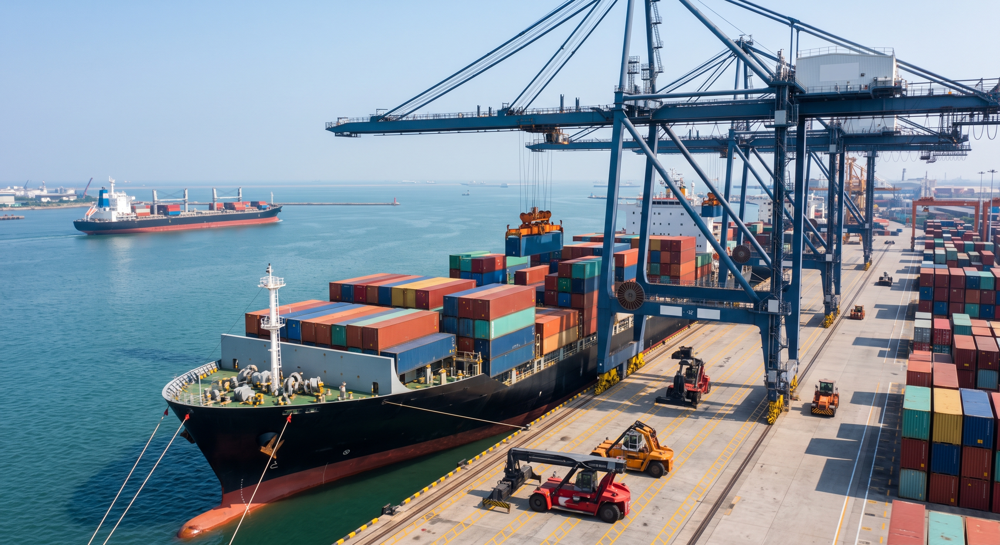
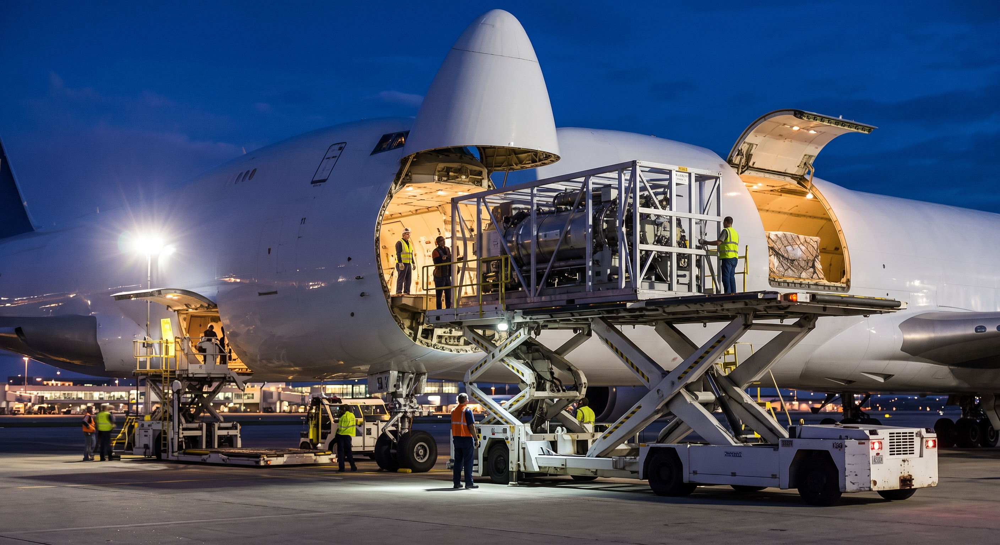
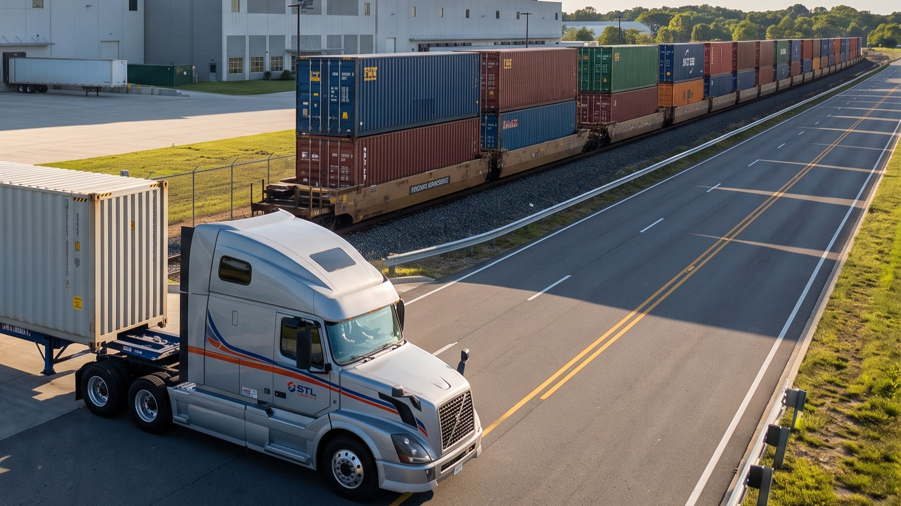

Service 02
Intercontinental Logistics
Our reliable global network ensures a seamless and efficient movement of your goods.



Intercontinental Logistics
Navigating global supply chains requires precision, reliability, and robust project management. At STL, we simplify the complexities of international trade by delivering responsive, end-to-end logistics solutions. Acting as your trusted partner, we seamlessly coordinate the movement of assets across borders, ensuring dependable and integrated field execution that consistently exceeds expectations.
Global logistics expertise
Freight forwarding, customs support, warehousing, and supply-chain coordination across key trade lanes.
Discuss your needs